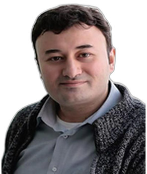

Profil
Rövşən İbrahimov 2019-cu ildən Hankuk Xarici Dillər Universitetində, 2023-cü ildən Xəzər Universitetində professordur. 2001–2008-ci illərdə Ankara Universitetində beynəlxalq münasibətlər üzrə PhD proqramını bitirib. Mövzu Avropa İttifaqının Cənubi Qafqaz dövlətləri ilə münasibətləridir. 1998–2001-ci illərdə Ankara Universitetinin Avropa İttifaqı İnstitutunda magistr dərəcəsi alıb. 1994–1998-ci illərdə Ankara Universitetində beynəlxalq münasibətlər üzrə bakalavr dərəcəsi alıb. 2003–2013-cü illərdə Qafqaz Universitetində beynəlxalq münasibətlər kafedrasının müdiri, 2011-ci ildən dosent olub. 2022-ci ildən Dünya Azərbaycanlı Alimlər Birliyinin üzvüdür.
İş təcrübəsi
Hankuk Xarici Dillər Universiteti, Cənubi Koreya
2019–hazırdaProfessor
Xəzər Universiteti, Bakı, Azərbaycan
2023–hazırdaProfessor
Hankuk Xarici Dillər Universiteti, Cənubi Koreya
2015–2019Dosent
Azərbaycan Diplomatik Akademiyası, Bakı
2014–2015Adyunkt-professor
Azərbaycan Respublikasının Prezidenti yanında Strateji Araşdırmalar Mərkəzi
2011–2014Xarici siyasət təhlili şöbəsinin müdiri
Qafqaz Universiteti, Bakı
2011Xarici əlaqələr üzrə prorektor
Qafqaz Universiteti, Bakı
2011-ci ildənDosent
Qafqaz University
2003–2013Beynəlxalq münasibətlər kafedrasının müdiri
Qafqaz Universiteti, Bakı
1999–2003Müəllim
Təhsil
PhD
2001–2008Beynəlxalq münasibətlər. Avropa İttifaqının Cənubi Qafqaz dövlətləri ilə münasibətləri
Ankara Universiteti, Sosial Elmlər İnstitutu, Türkiyə
MA
1998–2001Beynəlxalq münasibətlər. TACIS və Azərbaycan
Ankara Universiteti, Avropa İttifaqı İnstitutu, Türkiyə
Tamamlanmamış magistratura
1998–1999Beynəlxalq münasibətlər
Yaxın Şərq Texniki Universiteti, Ankara, Türkiyə
Bakalavr dərəcəsi
1994–1998Beynəlxalq münasibətlər
Ankara Universiteti, Türkiyə
DAAB fəaliyyəti
- 2022 — Dünya Azərbaycanlı Alimlər Birliyinin üzvü
Nəşrlər
Rəylənmiş (peer-reviewed) jurnal məqalələri
1. Xezer Denizin Hüquqi Statusu (The Legal Status of the Caspian Sea), XX Esrin ve II Minilliyin Tarixi, April, Bakı-2001 (lang azerbaijanian)
2. Dayanıqlı İnkişaf ve Şehersalma Problemleri (Sustainable Development and Urban Problems), Azerbaycanda Dayanıqlı İnkişafda Keçidin Problemleri, May, Bakı- 2001, (lang turkish, english)
3. Putinin Azerbaycan Ziyareti ve Azerbaycan-Rusya İlişkileri (Putin’s Visit in Azerbaijan and Azerbaijanian-Russian Relations), Bagımsızlıkların 10. Yılında Türk Cumhuriyetleri Azerbaycan,Kazakistan,Kırgızistan,Türkmenistan Özbekistan, Editor, Emine Gürsoy Naskali, Dr. Erdal Şahin, Haarlem, Holland-2002, (lang turkish)
4. Uluslararası İlişkilerde Realistler ve Realizm Paradigması, (Realists in International Relations and Realism Paradigma), Journal of Qafqaz University, Number 10, Baku, Fall, 2002
5. Azerbaycan Kültüründe Çay (Tea in Azerbaijanian Culture), TURKİAT Araştırma Ve Uygulama Merkezi, Marmara Üniversitesi, November, Istanbul-2001, (lang turkish)
6. Böyük İpek Yolu Programı ve Gözlenilen Neticeler (The Great Silk Road Project and Expected Conclusions)
7. TRACECA Proqramının Azerbaycan İqtisadiyatına Te’siri (The Affect of TRACECA Program on Azerbaijan Economy)
8. TRACECA Proqramının Tarixi İnkişafı ve Azerbaycan, (Historical Development of TRACECA Program and Azerbaijan), Journal “Aydın”, March-April, Bakı-2002, (lang azerbaijanian)
9. The Problems of Self-Determination in the Contemporary International System, The Cold War and It’s Legasy, International Summer School, HESP Program in Bulgaria, 22 August, Pamporovo-2002, (lang english)
10. Dağlık Karabağ Sözde Cumhuriyeti’nin Bağımsızlığının Tanınması Durumunda Uluslararası Ortamda Ortaya Çıkabilecek Sorunlar (Vizible Problems That Could Appear in the Case of Recognition of the Independence of So-called “Republic of Nagorno-Karabakh”) Journal of “Ermeni Araştırmaları”, Ermeni Araştırmaları Ensitüsü, No 6, Summer, Ankara-2002, (lang turkish)
11. GUÖAM Örgütünün Kurulma Sebeplerin Uluslar arası İlişkiler Karar Verme Süreci Teorisi Açısından Değerlendirilmesi (Evaluation of Creation GUUAM Organization In the Case of Theory of Decition-Making of International Relations) “Azerbaycan Müsteqillikten Sonra”, Azerbaycan Respublikası Tehsil Nazirliği, Bakı, 3-4 Mart 2003, (lang turkish)
12. Beynelxalq Hüquq Kontekstinde Ve Ermeni Tezisleri Çerçivesinde Qondarma “Dağlıq Qarabağ Respublikası” Öz Müqedderatını Teyinetme Hüququ Ehtimallarını Deyerlendirilmesi, (Evaluation of Possibilities for Self- Determination for So-Called “Nagorno-Karabakh Republic Under the Contects of International Law and Armenian Thesises), Beynelxalq Ermeni Terrorizmi İnsan Hüquqlarına Tehdiddir, Beynelxalq Konferans, Bakı, 2-3 May, 2003
13. 11 Eylül Saldırıları Işığında Ermeni Terörüyle Mücadelede Yeni Yöntemler (New Methods in Fighting against Armenian Terrorism In light of September 11 Attacks,), Kök Yayınları Cilt / Volume V, Sayı / Issue 2, Autumn, 2003
14. 11 Sentyabr Hadiselerinden Sonra Ermeni Terorizmi ile Mübarizenin Yeni Yolları, (New Methods of Struggle with Terrorizm After 11th September’s Accidents), Beynelxalq Ermeni Terrorizmi İnsan Hüquqlarına Tehdiddir, Beynelxalq Konferans, Bakı, 2-3 May, 2003
15. Azerbaycan ve Türkiye İlişkilerinin AB Tarafından Desteklenen Bölgesel Ulaşım Projelerin Geliştirilmesi Açısından Önemi, (The Importance Role of the Regional Projects Supported by EU in Development of Relations Between Azerbaijan and Turkey, A Competition of Scientific Articles for Young Researches and Students under the Topic of “Scientific, Political, Cultural And Economical Spheres Of Azerbaijan-Turkish Relations, Bakı, May, 2003
16. TRASEKA Proqramının İnkişafı ve Azerbaycan (Development of TRACECA Program and Azerbaijan), Dirçeliş XXI Esr, Journal, No 6, Azerbaijan Institute of State Building and International Relations, Bakı, June, 2003
17. İslam as Religions and its Perceptions, Situation in Central Asia, HESP Seminar “Central Asia under the Context of International Relations”, Volgograd, Russia, December,2003
18. AB Programları ve Türkiye (EU Programs and Turkey), Sayıştay Journal, No 43, 2003
19. Central Asian states as a Model for Islamic world, HESP Seminar “Central Asia under the Context of International Relations”, Bishkek, Kyrgyzstan, June, 2004
20. USA Interests in Caucasian Region-An Interview with Prof. Peter Rutland, Journal of Caucasian Studies, Volume 1. Number 1, Fall, 2004
21. Türkiye-Türk Cumhuriyyetleri İlişkileri: Dünü, Bugünü ve Yarını, (Turkey Relationship with the Turkic Republics: Yeterday, Today, Tomorrow), Stratejik Öngörü, Journal, İstanbul, No 5, May, 2005
22. Azerbaycan Ekonomisinde Petrol ve Gaz Kaynaklarının İşletmesine Alternatif Olarak Nakliyat Koridorları, (Transport Corridors as Alternative For Oil And Gaz Resourses In Azerbaıjan Economy), Avrasya Etüdleri Journal, Turkey, Number 27-28, Fall-Winter, 2005
23. Неформальный Саммит СНГ: Взгляд Из Баку, (Unofficial Summit of the CIS: A view from Baku, http://www.eurasianhome.org/xml/t/expert.xml?lang=ru&nic=expert&pid=743, Moscow, 28 July, 2006
24. Myth V Kitsch: Reality and Perception of Religious Based Terrorism in the Case of Islam, Understanding and Responding to Terrorism: A Multy-Dimensional Approach, Washington, September 8-9, 2006
25. Energy Potential of Azerbaijan: Can it be used as Alternatıve for Russia? (Энергетический Потенциал Азербайджана: Может Ли Он Быть Использован Как Альтернатива России?), http://www.eurasianhome.org/xml/t/expert.xml?lang=ru&nic=expert&pid=905,
26. Avrupa Birliği Enerji Politikası ve Bu Politika Açısından Hazar Bölgesinde Bulunan Enerji Kaynakların Önemi, (Energy Policy of Europe and İmportance of the Energy Resourses of Caspian Region in Accordance with This Policy), Qloballaşma Prosesinde Qafqaz ve Merkezi Asiya, Qafqaz University, Bakı 02-05 May, 2007
27. The European Union And Russia- Gas Games On The Southern Flank: Different Purposes, Similar Results, Turkishweekly, http://www.turkishweekly.net/comments.php?id=2474, 11 February, 2007
28. State Oil Company of Azerbaijan Republic: Transition from National to Transnational Company or Demand of Time? http://www.turkishweekly.net/comments.php?id=2487, 18 February 2007
29. Prospects of The Russian Oil Pipeline to The West, Advantages And Disadvantages of Current Infrastructure, http://www.turkishweekly.net/comments.php?id=2498, 25 February 2007
30. Nationalization Of Oil Sector In Venezuela: Action Or Reaction? http://www.turkishweekly.net/comments.php?id=2515, 4 Mart 2007
31. Post-Turkmenbashi Turkmenistan: Reburning of the Gas Related Games, http://www.turkishweekly.net/comments.php?id=2525, 11 Mart 2007
32. Azerbaijan: Happiness is the Availability of Export Corridors, http://www.turkishweekly.net/comments.php?id=2536, 18 Mart 2007
33. Nabucco: Project with Strange Name and Mysterious Intentions, http://www.turkishweekly.net/comments.php?id=2547, 25 Mart 2007
34. Azerbaijan-New Trend in Oil Strategy, http://www.turkishweekly.net/comments.php?id=2556, 02 April 2007
35. Israeli Pipeline: Ashelon-Eilat-The Second Breath, http://www.turkishweekly.net/comments.php?id=2564, 09 April 2007
36. Energy Policy in EU Region-National Priorities vs. Common Policy, http://www.turkishweekly.net/comments.php?id=2569, 16 April 2007
37. Does Energy Policy of the EU Need Correction?, http://www.turkishweekly.net/comments.php?id=2578, 23 April 2007
38. Turkmenistan, Russian Monopolist Gazprom and European Union, http://www.turkishweekly.net/comments.php?id=2583, 30 April 2007
39. The Energy Summit in Poland And Putin's Visit To The Central Asia- Predicted Results, http://www.turkishweekly.net/comments.php?id=2615, 25 May 2007
40. Kazakhstan-One of the Important Player In Energy Game On Eurasian Area, http://www.turkishweekly.net/comments.php?id=2625, 05 June 2007
41. Again About Nabucco Project, http://www.turkishweekly.net/comments.php?id=2635, 18 June 2007
42. Samsun-Ceyhan, What Are The Chances?, http://www.turkishweekly.net/comments.php?id=2664, 16 July 2007
43. Turkish-Iranian Gas Agreement-Many Questions in One Case, http://www.turkishweekly.net/comments.php?id=2682, 31 July 2007
44. Russian Expedition To The North Pole And Energy Policy: Is There Any Link?, http://www.turkishweekly.net/comments.php?id=2712, 03 September 2007
45. Kashagan: Possible Outcomes of the Kazakhstan Government Decisions, http://www.turkishweekly.net/comments.php?id=2739, 17 October 2007
46. Baku-Tbilisi-Kars: Geopolitical Effect on the South Caucasian Region, http://www.turkishweekly.net/comments.php?id=2763, 23 November 2007
47. Azerbaijan “Gas Attack” - Exit to Europe, http://www.turkishweekly.net/comments.php?id=2768, 27 November 2007
48. Presidential Elections in Armenia and Its Uniqueness, http://www.turkishweekly.net/comments.php?id=2824, 08 February 2008
49. Interdependence in Gas Sector on Eurasian Area: Actors and Their Roles-1, http://www.turkishweekly.net/comments.php?id=2828, 11 February 2008
50. Interdependence in Gas Sector on Eurasian Area: Actors and Their Roles -2, http://www.turkishweekly.net/comments.php?id=2844, 25 February, 2008
51. Colored Revolutions and the Political Turmoil in Armenia, http://www.turkishweekly.net/comments.php?id=2861, 14 Mart 2008
52. Interdependence in Gas Sector on Eurasian Area: Actors and Their Roles-3, http://www.turkishweekly.net/comments.php?id=2885, 23 April, 2008
53. The End of the Era of Cheap Gas, http://www.turkishweekly.net/comments.php?id=2892, 05 May, 2008
54. Trans-Afghan Pipeline: Will Ambitions Convert into the Reality, 15 May, 2008
55. Неформальный Саммит СНГ: Взгляд Из Баку, http://www.eurasianhome.org/xml/t/expert.xml?lang=ru&nic=expert&pid=743, 28 Jule 2006
56. Энергетический Потенциал Азербайджана: Может Ли Он Быть Использован Как Альтернатива России?, http://www.eurasianhome.org/xml/t/expert.xml?lang=ru&nic=expert&pid=905, 26 December, 2006.
57. Проблемы Экспорта Российской Нефти, http://www.eurasianhome.org/xml/t/expert.xml?lang=ru&nic=expert&pid=968, 14 Fevruary 2007.
58. Национализация Энергетического Сектора В Венесуэле: Что Дальше?, http://www.eurasianhome.org/xml/t/expert.xml?lang=ru&nic=expert&pid=987, 5 Mart, 2007.
59. Туркменистан После Ниязова: Возможные Варианты Развития Событий, http://www.eurasianhome.org/xml/t/expert.xml?lang=ru&nic=expert&pid=1012, 28 Mart 2007.
60. Азербайджан: Пересмотр Нефтяной Стратегии, http://www.eurasianhome.org/xml/t/expert.xml?lang=ru&nic=expert&pid=1048, 16 April 2007.
61. Энергетическая Политика ЕС: Насколько Грамотно Она Обоснована?, http://www.eurasianhome.org/xml/t/expert.xml?lang=ru&nic=expert&pid=1117, 5 June 2007.
62. Габалинская РЛС: От Конфронтации К Сотрудничеству?, http://www.eurasianhome.org/xml/t/expert.xml?lang=ru&nic=expert&pid=1133, 13 June 2007.
63. Израильский Трубопровод: Фактор России, http://www.eurasianhome.org/xml/t/expert.xml?lang=ru&nic=expert&pid=1141, 18 June 2007.
64. Энергетический Саммит В Польше И Визит Владимира Путина В Центральную Азию, http://www.eurasianhome.org/xml/t/expert.xml?lang=ru&nic=expert&pid=1150, 21 June 2007.
65. Перспективы Энергетического Сотрудничества Азербайджана И Казахстана, http://www.eurasianhome.org/xml/t/expert.xml?lang=ru&nic=expert&pid=1206, 14 August 2007.
66. Маршруты Экспорта Азербайджанского Газа В Европу, http://www.eurasianhome.org/xml/t/expert.xml?lang=ru&nic=expert&pid=1337, 26 November 2007.
67. Железная Дорога Баку-Тбилиси-Карс: Геополитическая Расстановка В Регионе Южного Кавказа, http://www.eurasianhome.org/xml/t/expert.xml?lang=ru&nic=expert&pid=1353, 4 December 2007.
68. Газ На Евразийском Пространстве: Игроки И Их Роли, http://www.eurasianhome.org/xml/t/expert.xml?lang=ru&nic=expert&pid=1423, 5 February 2008.
69. Резолюция Азербайджана В ООН Как Пример Успеха Дипломатии Страны, http://www.eurasianhome.org/xml/t/expert.xml?lang=ru&nic=expert&pid=1493, 1 April 2008.
70. Статус Каспийского Моря И Проект Набукко: Развитие Отношений Между Азербайджаном И Туркменистаном, http://www.eurasianhome.org/xml/t/expert.xml?lang=ru&nic=expert&pid=1541, 30 April 2008.
71. Possible Effect of Russia's Increased Prices for Natural Gas to Turkmenistan's Gas Policy, http://www.turkishweekly.net/columnist/2911/possible-effect-of-russia- 39-s-increased-prices-for-natural-gas-to-turkmenistan-39-s-gas-policy.html, 1 June, 2008
72. Статус Каспийского Моря И Проект Набукко: Развитие Отношений Между Азербайджаном И Туркменистаном, http://www.eurasianhome.org/xml/t/expert.xml?lang=ru&nic=expert&pid=1541, 30 April, 2008.
73. Визит Дмитрия Медведева В Азербайджан: Развитие Энергетического Сотрудничества, http://www.eurasianhome.org/xml/t/expert.xml?lang=ru&nic=expert&pid=1626, 4 July, 2008.
74. Причины Грузинской Операции В Южной Осетии, http://www.eurasianhome.org/xml/t/expert.xml?lang=ru&nic=expert&pid=1694, 21 August, 2008.
75. Почему Турция Активизируется На Южном Кавказе?, http://www.eurasianhome.org/xml/t/expert.xml?lang=ru&nic=expert&pid=1738, 24 September, 2008.
76. Итоги IV Энергетического Саммита В Баку, http://www.eurasianhome.org/xml/t/expert.xml?lang=ru&nic=expert&pid=1810, 17 November, 2008.
77. Турция Отказывается от «НАБУККО»?, http://www.eurasianhome.org/xml/t/expert.xml?lang=ru&nic=expert&pid=1882, 29 January, 2009.
78. Russian President's visit to Azerbaijan: Possible Scenarios in Energy Cooperation, http://www.turkishweekly.net/columnist/2930/russian-president-39-s- visit-to-azerbaijan-possible-scenarios-in-energy-cooperation.html, 3 July, 2008.
79. Energy Security Summit in Kiev and Expectations, http://www.turkishweekly.net/columnist/2939/energy-security-summit-in-kiev-and- expectations.html, 12 July, 2008.
80. Russian - Georgian Conflict - Reasons and Possible Resutls, http://www.turkishweekly.net/columnist/2971/russian-georgian-conflict-reasons- and-possible-resutls.html, 29 August, 2008.
81. Gas OPEC: New Instrument of International Policy, http://www.turkishweekly.net/columnist/3000/gas-opec-new-instrument-of- international-policy.html, 31 October, 2008.
82. 2009: Russian Gas Policy - First Step Taken, http://www.turkishweekly.net/columnist/3074/2009-russian-gas-policy-first-step- taken.html, 21 January, 2009.
83. Nabucco Pipeline: Increased Actuality, but Inertia in Realization (I), http://www.turkishweekly.net/columnist/3101/nabucco-pipeline-increased-actuality- but-inertia-in-realization-i-.html, 17 February, 2009.
84. Nabucco Pipeline: Increased Actuality, but Inertia in Realization (II), http://www.turkishweekly.net/columnist/3110/the-nabucco-pipeline-increased- actuality-but-inertia-in-realization-ii-.html, 3 Mart, 2009.
85. Azerbaijan`s Role in Regional Energy Security, Volume 1, No 10 http://ada-edu- az.outsourceinformationsystems.com/files/beweekly/18/ADA%20Biweekly_Vol.%201_ No.%2010.pdf, 15 June, 2008.
86. Turkey and Russia’s Agreement: Different Intentions – Who is the Winner?, http://www.turkishweekly.net/columnist/3185/turkey-and-russia%E2%80%99s- agreement-different-intentions-who-is-the-winner.html, 4 September, 2009.
87. Exporting gas to Europe: What does Turkmenistan want?, http://www.usak.org.tr/EN/makale.asp?id=1108, 12 October, 2009.
88. France: New Active Player in Eurasian Energy Game, http://www.usak.org.tr/EN/makale.asp?id=1159, 30 October, 2009.
89. Turkish-Armenian Rapprochement and Disagreements with Azerbaijan: A View from Baku, http://www.turkishweekly.net/columnist/3258/turkish-armenian- rapprochement-and-disagreements-with-azerbaijan-a-view-from-baku.html, 27 December, 2009.
90. Отношения между Азербайджаном и Турцией в 2009 году: под знаменателем турецко-армянского сближения, Exo, Newspaper, No3, 8 January, 2010.
91. Проект Набукко: Откуда и как взять газ?, Exo, Newspaper, No 22, 5 Fevruary, 2010.
92. Энергетическая политика ЕС на Кавказе и в Центральной Азии: на пороге поражения, http://www.eurasianhome.org/xml/t/expert.xml?lang=ru&nic=expert&pid=2299, 27 January, 2010.
93. Турция – Азербайджан. новая «футбольная дипломатия»?, http://www.eurasianhome.org/xml/t/expert.xml?lang=ru&nic=expert&pid=2327, 26 February, 2010.
94. RWE из национальной компании становится транснациональной, http://www.eurasianhome.org/xml/t/expert.xml?lang=ru&nic=expert&pid=2369, 12 April, 2010.
95. Насколько внешняя политика Турции консолидирована с политикой энергетической?, http://www.1news.az/analytics/20100616033135682.html,
96. Сланцевый газ - новая эра энергобезопасности или дополнительные возможности?, http://www.1news.az/analytics/20100702013321251.html, 02.07. 2010.
97. Визит Клинтон в Баку - восстановление статус-кво или новые тенденции, http://www.1news.az/analytics/20100720115209746.html, 20.07.2010.
98. Azerbaijan as a new intellectual center of global thinking, Today`s Zaman, 22 July, 2010.
99. Визит Медведева в Баку - дань новой традиции и интересы в газовом секторе, http://www.1news.az/analytics/20100908025800033.html, 08.09.2010.
100. Nabucco projesi için gaz bulunacak mı? Aynı meseleye tarafların farklı bakış açıları, http://www.1news.com.tr/yazarlar/20100913123318912.html, 13.09.2010.
101. Türk Dili Konuşan Devletlerin Zirvesi: Sembolik toplantı mı, yoksa çalışan bir kurum?, http://www.1news.com.tr/yazarlar/page3/, 27.09.2010.
102. Азербайджано-Казахстанские отношения: неизбежность развития, http://www.1news.az/analytics/20101002021301535.html, 02.10.2010.
103. Türk dış politikasında yeni dönem ve Türki Cumhuriyetleri ile ilişkiler: 1. kısım - Cumhuriyet dönemin dış politikasının temel ilkeleri, http://www.1news.com.tr/yazarlar/20101004022109467.html, 04.10.2010.
104. Проект AGRI - альтернативный транспортный коридор в Европу, http://www.1news.az/analytics/20101013014748562.html, 13.10.2010.
105. Решение по Косово - создание нового прецендента для возникновения новых государств?, http://www.1news.az/analytics/20101020011227706.html,
106. Турецкие масс медиа: что стоит за черным пиаром Азербайджана?, http://www.1news.az/analytics/20101029050646618.html, 29.10.10.
107. Azərbaycan ilə Türkiyə arasında Enerji sahəsində əməkdaşlıq: mövcud vəziyyət və gələcək perspektivlər, Analitik Baxış, No 4, SAM, September-October, 2010.
108. “Турецко-Азербайджанские отношения и политика Турции на Центральном Кавказе” Журнал Кавказ и Глобализация, Том 5, Выпуск 3-4, 2011, СФ&CA, Швеция
109. "The Influence of Armenian Identity Formation on the Foreign Policy of the Republic of Armenia" Journal of Qafqaz University, No 31 (2011)
110. ”Влияние возможной реализации трубопроводных транспортных проектов в Каспийском море на изменение геополитической и геоэкономической ситуации в регионе” Международные Исследования, Общество, Политика, Экономика, Журнал, No 3/4 (8/9) 2011, Казахстан
111. “Политика диверсификации газовых транспортных путей Туркменистаном: насколько она эффективна?” 1news.az, 14.12.2011 http://1news.az/authors/ribrahimov/20111214125519503.html#page1
112. “Стратегия Азербайджана при голосовании по резолюциям против Ирана и Сирии. Каковы причины и последствия?” 1news.az, 16.12.2011 http://www.1news.az/analytics/20111216113013948.html#page1
113. ” Трансанатолийский трубопровод: Начало новой эры в энергетической политике Азербайджана” 1news.az, 01.01.2012 http://1news.az/authors/ribrahimov/20120101054243783.html
114. “«Французский узел»: когда торжествует глупость” 1news.az, 26.01.2012 http://www.1news.az/authors/ribrahimov/20120126013434628.html
115. “Экономические санкции против Ирана: насколько эффективен инструмент давления Запада на эту страну?” 1news.az, 01.02.2012 http://www.1news.az/authors/ribrahimov/20120201092545156.html
116. “Реквием по "Набукко": Исполнение в Трех Актах” 1news.az, 10.02.2012 http://www.1news.az/authors/ribrahimov/20120210042404884.html
117. “Влияние экономических факторов на возможности урегулирования нагорно-карабахского конфликта, как приоритет внешней политики Азербайджана” Азербайджан: Путь к независимости, книга, Центр Стратегических Исследований, Баку, 2012
118. “Ирано-азербайджанские отношения: причины «динамики деструктивизма»“ 1news.az, 19.03.2012 http://www.1news.az/authors/ribrahimov/20120319045239898.html
119. Рекомендации Европейского парламента: Момент Истины, 30.04.2012, http://www.1news.az/authors/ribrahimov/20120430034248720.html
120. Движение Неприсоединения как инструмент реализации национальных интересов Азербайджана, 10.05.2012 http://www.1news.az/authors/ribrahimov/20120511104117876.html
121. Pakistan and Azerbaijan: Brotherly Relations through Long Distance, Diplomatic Insight, Islamabad, Pakistan, Journal, May 2012.
122. "Газовая политика" Азербайджана, как страны без выхода в мировой океан, 26.05.2012, http://www.1news.az/authors/ribrahimov/20120526014613059.html
123. "Газовая политика" Азербайджана, как страны без выхода в мировой океан, Газета Бакинский Рабочий, No 97, 30.05.2012.
124. Азербайджано-Иранские отношения в постструктуальном отображении: или тот момент, когда слова уже излишне, 24.06.2012, http://rovshan- ibragimov.blog.day.az/2012/06/24/privet-mir/
125. Связи Азербайджана с регионами России, как дополнительный механизм в формировании отношений между двумя странами, 10.07.2012, http://rovshan-ibragimov.blog.day.az/2012/07/10/svyazi-azerbajdzhana-s-regionami- rossii-kak-dopolnitelnyj-mexanizm-v-formirovanii-otnoshenij-mezhdu-dvumya- stranami/
126. Психологические аспекты геополитики на примере Сирии и Ирана,
127. 07.2012, http://rovshan-ibragimov.blog.day.az/2012/07/19/psixologicheskie- aspekty-geopolitiki-na-primere-sirii-i-irana/
128. 18 июля как момент истины для Сирии: обратный отсчет начался,
129. 07.2012, http://www.1news.az/authors/ribrahimov/20120724114644439.html
130. События в Таджикистане как отражение геополитической ситуации в регионе, 06.08.2012, http://rovshan-ibragimov.blog.day.az/2012/08/06/sobytiya-v- tadzhikistane-kak-otrazhenie-geopoliticheskoj-situacii-v-regione/
131. Путевые Заметки: Алматы, 20.09.2012, http://rovshan- ibragimov.blog.day.az/2012/09/20/putevye-zametki-almaty/
132. Неурегулированные конфликты как препятствие к региональному сотрудничеству (на примере Армяно-Азербайджанского Нагорно- Карабахского конфликта), Армяно-Азербайджанский Нагорно-Карабахский конфликт: Современное состояние и перспективы урегулирования, Материалы Международной Научно-Практической Конференции, Кишинэу, Молдова, 01.06.2012.
133. Michael J. G. Cain, Rovshan Ibrahimov, Fevzi Bilgin, Linking the Caspian to Europe: Repercussions of the Trans-Anatolian Pipeline, Rethink Paper 06, October 2012, Rethink Institute, Washington DC.
134. "Azerbaycan Enerji Politikası: Alternatif Enerji Nakil Hatları Arayışı", Cild. 7, Sayı. 14, 2012, USAK, Ankara, Türkiyə, ss. 125-148.
135. http://cavsamdergi.karatekin.edu.tr/DergiTamDetay.aspx?ID=4&Detay=OzetТрансграничная Преступность в Зоне Южных Постсоветских Рубежей России: Социальные и Политические Аспекты Проблемы, (Transborder Offence in the zone of the Southern PostSoviet frontiers of the Russia-Social and Political Aspects) Editor, S. Golunov, Volgograd, 2006.
136. “Турецко-Азербайджанские отношения и политика Турции на Центральном Кавказе” Журнал Кавказ и Глобализация, Том 5, Выпуск 3-4, 2011, СФ&CA, Швеция
137. Azerbaijan Oil Production As A Main Locomotive Of State Economy, Avrasiya Strateji, Cild 1, Sayı 1, 2012, Karatekin Universiteti, Çankırı, Türkiyə, ss, 61-74
138. Rovshan Ibrahimov, Ariz Huseynov, Azerbaijan and Pakistan: Twenty years of proven relations, Azerbaijan&Pakistan: 20 years of Friendship and Cooperation, Pakistan, Diplomatic Insight&Embassy Azerbaijan Republic to Pakistan, 2013, ss. 47-57., http://thediplomaticinsight.com/wp-content/uploads/2013/02/azerbaijan.swf
139. Критический возраст, смогут ли Франция и Германия предотвратить развал единой Европы в 50-ю годовщину Елисейского договора?, Region plus, No 3,
140. На западном фронте без перемен, Region plus, No 4, 15.02.2013, ss., 34-37.
141. Италия без правительства, Итоги досрочных выборов как знамение.новых досрочных выборов, Region plus, No 6, 12.03.2013, ss., 26-29.
142. Religion Based Terrorism in the Case of Islam as a Product of the Contemporary International Relations System, Change and Transformation in the Organization of Islamic Cooperation (OIC) Countries, 3rd Think Tank Forum OIC Member States, 2-3 March, Baku, 2012, ss., 215-228.
143. Островные страсти, Жители Фольклендов предпочли остаться британцами, Region plus, No 7, 19.03.2013, ss., 22-25.
144. Весенняя Оттепель, Превратится ли турецко-курдское сближение в устойчивый процесс?, Region plus, No 8, 02.04.2013, ss., 18-21.
145. «Газовая атака» в Европу, Азербайджан в преддверии выбора экспортного маршрута для своего газа, Region plus, No 9, 09.04.2013, ss., 28-31.
146. Azerbaijan`s Energy History and Policy: From Past Till Our Days, Energy and Azerbaijan: History, Strategy and Cooperation, ed. Rovshan Ibrahimov, SAM, Baku, 2013.
147. The Extend and Limits of Turkey`s Soft Power in Azerbaijan, Turkey Country Report, Rethink Institute, Washington DC, 2013, pp. 57-63.
148. "Труба" в Никуда.Россия планирует наращивать мощности газопроводов в западном направлении, Region plus, No 12, 30.04.2013, ss., 32-33.
149. "Сланцевое Золото", Изменит ли сланцевая революция в США мировую политику?, Region plus, No 15, 21.05.2013, ss., 24-25.
150. Арктическая "Жара"Борьба за передел Северного полюса ужесточается, Region plus, No 17, 04.06.2013, ss., 24-27.
151. Игра в "Разукрашки", Мифы и правда об экономике оккупированного Арменией Нагорного Карабаха, Region plus, http://regionplus.az/ru/articles/view/2109
152. The Gas Sector, What does the development of Israel's gas fields hold in store for the Near East?, Region plus, http://regionplus.az/en/articles/view/2220
153. Azad Gəribovla birlikdə, Geopolitical Competition in the Central Asia - The dynamics of relations with Azerbaijan, SAM, Volume 9, August, 2013.
154. Pragmatic Cooperation, SOCAR and Rosneft possess broad profile for cooperation in the oil and gas sector, Region plus, http://www.regionplus.az/en/articles/view/2232
155. Р.Ибрагимов, А.Гусейнов Политика эффективного использования энергетических ресурсов в странах, богатыми ресурсами: на примере Азербайджана» // Материалы Х Международной научной конференции "Устойчивое развитие и эффективная ресурсная политика". - Алматы, 2013. - s.30- 36
156. Shirin Akiner, Rovshan Ibrahimov, Ariz Huseynov, Interregional Cooperation in Eurasia, Transport and Logistic Projects as an Accelerator of Integration within and between the Black Sea region, the South Caucasus and the Central Asia, SAM Review, Special Double Issue, Volume 9-10, September, 2013.
157. Azerbaijan: 20 years after Independence, Journal of Qafqaz University, No 34, 2012, p. 105-113.
158. EU External Policy Towards the South Caucasus: How Far is it From Realizations?, SAM, Baku, 2013.
159. Azerbaijan: The state as Crossroads of Internal Policy and the External Interests, International Dimensions of Authoritarian Persistence, Lessons from Post-Soviet States, ed. Rachel Vanderhill, Michael E. Aleprete Jr., Lexington Books, pp. 125-140.
160. Turkish-Armenian Rapprochement: Defining the Process and its Impact on Relations Between Azerbaijan and Turkey, Caspian Report, Istanbul, Caspian Strategy Institute, Qış, 2014, No 6, s. 84-97.
161. After the 2013 Azerbaijani Presidential Elections: Challenges and Expectations, Caucasus International, Vol. 3, No 4, Winter 2013-2014, s. 105-114.
162. Dictionary of Energy Terms, Enerji Terminlərinin İzahlı Lüğəti, (iki dildə), Qanı Nəsirov, Elşad Nəsibov, Aqşin Umudov və Useyd Dinlemez ilə birlikdə, Bakı, Qafqaz Universiteti Yayınları, 2014.
163. Значение промышленной разработки энергетических ресурсов Каспийского моря для Азербайджана: исторический экскурс и современное положение,
164. 05.2014, http://www.caspiania.org/2014/05/11/znachenie-promyshlennoj- razrabotki-energeticheskix-resursov-kaspijskogo-morya-dlya-azerbajdzhana- istoricheskij-ekskurs-i-sovremennoe-polozhenie/
165. К истории азербайджанско-иранских отношений: взгляд из Баку, 02.06.2014, http://www.caspiania.org/2014/06/02/k-istorii-azerbajdzhansko-iranskix-otnoshenij- vzglyad-iz-baku/
166. The Importance of the Caspian Sea to Azerbaijan,The Caspain Sea at the Crossroad: Geopilitical, Geo-Strategic and Geoeconomic Analysis, ed. Carlo Frappi & Azad Garibov, ISPI, SAM, EGEA, Milano, 2014, 93-112.
167. The Participation of Azerbaijan Citizens in Conflict in Syuria and Iraq and its Potential Radicalization Effect in Azerbaijan, in Countering Radicalisation and Violent Extremism Among Youth to Prevent Extremism, ed. M. Lombardi, E. Ragab, V. Chin, IOC Press, Washington DC, 10-13 June, 2014, 164-170.
168. U.S.-Azerbaijan Relations: A View from Baku, Rething Paper 17, Rething Institution, Washington DC, October 2014.
169. Russia’s Borders: Azerbaijan Benefits From Not Offending Its More Powerful Neighbour, 10.12.2014, https://theconversation.com/russias-borders-azerbaijan- benefits-from-not-offending-its-more-powerful-neighbour-35221.
170. Foreign Policy Of Azerbaijan: Adequacy And Predictability, Caspian Report, Issue 09, HASEN, Istanbul, Spring, 2015, 102-117.
171. Turkish Foreign Policy Towards Armenia in 2008-2009: Impact On Azerbaijani- Turkish Relations, Bilge Strateji, Volume 7,No 12, Spring 2015, 47-59.
172. Turkish-Azerbaijani Energy Relations: Significant Leverage in the Implementation of the Foreign Policy Interests of Both Countries, Insight Turkey, Volume 17, No 2, 2015, 83
173. Отношения Азербайджан-США с момента независимости до наших дней,
174. 03.2015, Caspiania, http://www.caspiania.org/2015/03/13/otnosheniya- azerbajdzhan-ssha-s-momenta-nezavisimosti-do-nashix-dnej/.
175. Трансанатолийский газопровод- TANAP: Очередной геоэкономический проект Азербайджана,06.04.2015, Caspiania, http://www.caspiania.org/2015/04/06/transanatolijskij-gazoprovod-tanap- ocherednoj-geoekonomicheskij-proekt-azerbajdzhana/.
176. Внешняя политика Азербайджана на Каспии: отношения с Россией, 01.06.2015, Caspiania, http://www.caspiania.org/2015/06/01/azerbajdzhanskaya-vneshnyaya- politika-i-ee-osnovnye-napravleniya/.
177. Внешняя политика Азербайджана на Каспии: практика восприятия азербайджанско-иранских отношений, 02.06.2015, Caspiania, http://www.caspiania.org/2015/06/02/vneshnyaya-politika-azerbajdzhana-na-kaspii- praktika-vospriyatiya-azerbajdzhansko-iranskix-otnoshenij/
178. Внешняя политика Азербайджана на Каспии: неизбежность развития отношений с Казахстаном, 04.06.2015, http://www.caspiania.org/2015/06/04/vneshnyaya-politika-azerbajdzhana-na-kaspii- neizbezhnost-razvitiya-otnoshenij-s-kazaxstanom/.
179. Внешняя политика Азербайджана на Каспии: инертное состояние отношений с Туркменистаном, 09.06.2015, Caspiania, http://www.caspiania.org/2015/06/09/vneshnyaya-politika-azerbajdzhana-na-kaspii- inertnoe-sostoyanie-otnoshenij-s-turkmenistanom/.
180. Энергетические интересы Турции и деятельность ТПАО в Азербайджане,
181. 07.2015, Caspiania, http://www.caspiania.org/2015/07/15/energeticheskie- interesy-turcii-i-deyatelnost-tpao-v-azerbajdzhane/.
182. Влияние снятия международных санкций с Ирана на Азербайджан, 22.07.2015, Caspiania, http://www.caspiania.org/2015/07/22/vliyanie-snyatiya-mezhdunarodnyx- sankcij-s-irana-na-azerbajdzhan/.
183. Turkısh-Azerbaıjanı Energy Relatıons: Basıs For Pragmatıc Relatıons Between The Two Countrıes, http://www.naturalgaseurope.com/turkish-azerbaijani-energy- relations-25168.
184. Каспийская флотилия в действии,14.10.2015, Caspiania, http://www.caspiania.org/2015/10/14/kaspijskaya-flotiliya-v-dejstvii/
185. Factors Influencing the Perceptıon of Azerbaıjan in Relations with the European Union, Ukraine Anlitika, Issue 1(3), January, 2016, 30-40.
186. The Current Situation and Future of the Oil and Gas Sector in Uzbekistan, 22.01.2016, http://cabar.asia/en/rovshan-ibrahimov-the-current-situation-and-future-of-the-oil-and- gas-sector-in-uzbekistan/.
187. The Development of the Transport Sector in Azerbaijan: The Implementation and Challenges, Caucasus International, Volume 6, No: 1, Summer 2016, http://cijournal.az/post/the-development-of-the-transport-sector-in-azerbaijan-the- implementation-and-challenges-rovshan-ibrahimov
188. Энергоресурсный сектор Туркменистана: Ожидания и Перспективы, 2016, http://cabar.asia/ru/turkmenistan/543-sabar-asia-energoresursnyj-sektor- turkmenistana-ozhidaniya-i-perspektivy.
189. Azerbaijan`s Bilateral Relations with Caspian Region States, Central Asia`s Affairs, Kzakhstan Institute for Strategic Studies under the President of Kazakhstan Republic, 3, 2016, 17-31. 아제르바이잔 에너지 전략의 발전, Turkic Economic Belt, ICAS-HUFS, May, 2016, 14-21.
190. The Energy Sector of Azerbaijan, Fundamentals and Strategy Developments, Journal of Hankuk University of Foreign Studies, Volume 9, Number 2, December 2016, 109-129.
191. Energy strategy development of Azerbaijan, Turkmenistan and Uzbekistan: A Comparative Analysis, Journal of Khazar of Humanities and Social Sciences, 2018.
192. Energy strategy development of Azerbaijan, Turkmenistan and Uzbekistan: A Comparative Analysis, Journal of Khazar of Humanities and Social Sciences, 2018.
193. Energy and Power Politics in the Cases of Azerbaijan and Turkmenistan, Journal of SAM, Center for Strategic Studies, Summer-Autumn, 2017
194. 이슈분석_아제르바이잔_아제르바이잔과 터키의 에너지 부문 협력, EMERICS, 2017
195. 이슈분석_아제르바이잔_아제르바이잔의 글로벌 북남 운송 회랑(INSTC) 프로젝트 참여와 기, EMERICS, 2017
196. 이슈분석_유라시아 일반_아제르바이잔과 투르크메니스탄 에너지 산업 개발에 대한 비교 분석-유사점과 차이점, EMERCIS, 2017
197. 이슈분석_아제르바이잔, 조지아, 터키 3 국 협력 강화, EMERICS, 2017
198. Azerbaijan`s Bilateral Relations with Caspian Region States, Central Asia`s Affaris, KISI, 2016
199. The Development of the Transport Sector in Azerbaijan: the Implementation and Challenges, Caucasus Studies, SAM, 2016. The Energy Policy of Azerbaijan, as Part of the Foreign Policy of the Post-Soviet Republics, Eurasia Cultura, Volume 3, September 2017, 103-117. Social Security in Azerbaijan: Evolutional Development from Past till Our Days on the Cases of Pension System and Social Protection of Refugees and Internally Diplaced Persons, The 8th International Seminar on the Current State and its Future Direction for the Social Policy of the Korea and Central Eurasian Countries, HUFS, 10 May 2018, 30
200. 카자흐스탄 근대화 및 산업화 정책 내 ICT 분야의 역할, 27.12.2019, https://www.globalict.kr/news/interview/interview.do?menuCode=010300.
201. Armenia had lost the Opportunity to Benefit from the EU, 18.02.2020, https://ccbs.news/en/article/516/?fbclid=IwAR1hdtE2i3SEaiRj7tAcD9ePC- RbJEAJz99lqi94GLNdlox6etdVeSEfklU
202. Отношения ЕС и Азербайджана: Прагматическая оценка ожиданий,
203. 03.2020, https://ccbs.news/ru/article/657/?fbclid=IwAR2L8eJ51HfTbxqy6WL9nuikihQ9Q- C3a6-z-nWGbU_5LeI3FGMKF3PAQnU.
204. The Current Situation and the Future of the Oil and Gas Sector in Uzbekistan, Journal of Bilge Strateji, Volume 11, No 21, Fall 2019, Istanbul, Bilgesam, pp. 277
205. 전문가오피니언] 키르기스스탄의 경제 몰락 위기, 25.08.2020, https://www.emerics.org:446/issueDetail.es?brdctsNo=306873&mid=a10200000000& &search_option=&search_keyword=&search_year=&search_month=&search_tagkeywor d=&systemcode=04&search_region=&search_area=¤tPage=1&pageCnt=10
206. 11.2023, https://www.kiep.go.kr/aif/issueDetail.es?brdctsNo=356726&mid=a10200000000&&searc h_option=&search_keyword=&search_year=&search_month=&search_tagkeyword=&system code=04&search_region=&search_area=¤tPage=1&pageCnt=10. Türkmenistan Enerji Sektörünün Gelişimi ve Özellikleri, Yeni Türkiye, Voluime 130, 2023, 29-46. Azerbaijan's New Foreign Policy as Its Leap to Middle Power, 04.01.2024, https://www.kiep.go.kr/aif/issueDetail.es?brdctsNo=359970&mid=a10200000000&sy stemcode=04. Successful Implementation of the Energy Strategy by Azerbaijan as a Small Power to Achieve National Interests, in Heydar Aliyev and the Foundations of Modern Azerbaijan, Springer Nature Switzerland, pp. 99-123. Book, Small State Foreign Policy in Contemporary World: The South Caucasus States (Azerbaijan, Georgia, and Armenia) and Beyond, LIT Verlag, Germany, 2024, 160 pages. Azerbaijan as an Emerging Middle Power after the 44-Day War and Reshaping the Foreign Policy, Journal of Caucasus Strategıc Perspectıves, Volume 5, Issue 2, Winter 2024, pp. 109-138.
Konfrans məqalələri və tezisləri
1. TRACECA Proqramı ve Onun Azerbaycan İqtisadiyatın İnkişafında Rolü (EU TRACECA Program and It’s Role ın Azerbaijanian Economy), Nasreddin Tusinin 800 illik yubileyine hesr edilmiş respublika konfransı toplusu, 2-3 April, Bakı-2001 (lang azerbaijanian)
2. Azerbaycan’da Neft ve Qaz Ehtiyatlarına Alternativ olaraq Neqliyyat Dehlizleri (Transport Corridors as an Alternative for Oil and Gas in Azerbaijan) Last three, Boyuk İpek Yolu Konfransı, Tehsil Ocagı, November, Bakı-2001, (lang azerbaijanian)
3. Bakü Ceyhan Projesi'nin Türkiye ile Hazar Bölgesi Ülkeleri Arasindaki Ilişkilerin Gelişmesinde Rolü (The Role of Baku-Ceyhan Project in The Developing of The Relations Between Turkey and The States of The Caspian Region) Azerbaycan Respublikasi Tahsil Nazirliyi, Azerbaycan Respublikasi Yanacaq ve Enerji Nazirliyi, Qafqaz Üniversiteti, Azerbaycan Dövlet Neft Akademikasi, Azerbaycan Dövlet Neft Şirketi, "Bakı-Tbılısı-Ceyhan Neft Kemerının Beynelxalq ve Regional Ehemmiyeti" Beynelxalq Konfransı, 6-7 June, Bakı-2002, (lang turkish)
4. Avrasya’da Heyata Keçirilen İki Neqlıyyat Layihesı Olan TRACECA Ve Şimal- Cenub Dehlizlerı Ve Azerbaycan Üçün Ehemiyyeti (Two Communicational Projects TRACECA and North-South and Their Importance for Azerbaijan), “Caucasian and Central Asia in the Globalization Process”, International Conference, Bakı, 12-13 May, 2003
5. The Role Of A New Technologies Achievements In The Case Of Development Of Azerbaıjan Under The Term Of Globalızatıon Process, “Caucasian and Central Asia in the Globalization Process”, International Conference, Bakı, 12-13 May, 2003
6. Border and Security Problems between Central Asian Countries and Possible Solutions, Security Challenges in Central Asia Conference, Bishkek, Kyrgyzstan, February, 19, 2004
7. Post- как попытка межкультурного диалога, (Post-as an attempt of intercultural dialog), Post - как феномен, стиль, бренд, коммуникация и удовольствие, Conference, Petrozavodsk, Russia, Summer, 2004
8. Обыкновенная посредственность или китч, он и в Африке китч, вольные размышления на популярную ныне тему, (Ordinary mediocre, or kitsch is in Africa also kitsch, free thouhgt on the nowadays popular theme Fucking International Relations, Post-Conference, Sartavala, Russia, 12-15 july, 2006
9. Restoration of Historical Silk Road: The Role of Azerbaijan in Formation of Alternative Transport Routes Between the European Union and Far Eastern States, Materials of International Academic Conference “How to Establish Silk-Road Studies as an Independent Discipline of Research, Volume 2, 21-24.08.2015, Gyengju, Korea,111
10. Азербайджан в период 1948 и 2018 годами. 70-летний Экскурс на Важнейшие События в Жизни Страны. International Conference Dedicated to the 70th Anniversary of Geongsang National University, 24 October 2018.
11. 전문가오피니언] 아르메니아: 2018 년 혁명 이후 새로운 정치 구도, 25.08.2020, https://www.emerics.org:446/issueDetail.es?brdctsNo=306874&mid=a10200000000&&search _option=&search_keyword=&search_year=&search_month=&search_tagkeyword=&systemcode =04&search_region=&search_area=¤tPage=1&pageCnt=10 Вода, лес, золото - экономический потенциал освобожденных территорий Азербайджана, 16.12.2020, Вода, лес, золото - экономический потенциал освобожденных территорий Азербайджана | ССBS - Самые важные новости Кавказа и каспийско-черноморского региона (ccbs.news) 카자흐스탄 근대화 및 산업화 정책 내 ICT 분야의 역할, 27.12.2019, https://www.globalict.kr/news/interview/interview.do?menuCode=010300. Azerbaijani Astronomers and Some of Their Discoveries: A Historical Overview, Conference: Introduction of Islamic Science and Technology into Jeoson of Korea, October 30-November 1, 2020, 22-29. 2021 년 아르메니아 에너지 분야에서 예상되는 문제, 30.03.2021, https://www.emerics.org:446/issueDetail.es?brdctsNo=313768&mid=a10200000000& systemcode=04 AB ile Ermenistan İlişkilerin Tarihsel Gelişimi, Etkileyen Faktörler ve Gelişim Perspektivi, Ermenistan`ın Dış Politikası (1991-2019), ed. Esma Özdaşlı, Hatem Cabbarlı. Armenian-Azerbaijan Nagorno-Karabakh conflict ‐and possible peaceful way for its solution, [21]+Armenian+Azerbaijan+Nagorno+Karabakh+Conflict+and+Possible+peaceful+way+ for+its+solution.pdf Азербайджан: укрепление «малой силы» или переходный период в становлении «средней»?, Международная Аналитика, Volume 12, No 2, 2021, pp 170-181, https://www.interanalytics.org/jour/article/view/375/330 Conflict in Nagorno-Karabakh: The Azerbaijani perspective on the route to peace,
12. 10.2020, together with Murad Muradov, https://blogs.lse.ac.uk/europpblog/2020/10/21/conflict-in-nagorno-karabakh-the- azerbaijani-perspective-on-the-route-to-peace/ Historical and Legal Aspects of the Karabakh Conflict An Azerbaijani Perspective on A Shared Post-Conflict Future, in Liberated Karabagh, Policy Perspectives by the ADA University Community, edited by Fariz Ismailzade and Damjan Krnjević Mišković, ADAU, Baku, 2021, pp. 51-74. Armenian Energy Sector: A General Overview, Bilge Strateji,Volume 12, No 22, Autumn 2021, pp.19-24 러시아-벨라루스 통합 추진의 정치적 배경과 함의, 15.11.2021, https://www.emerics.org:446/issueDetail.es?brdctsNo=322429&mid=a10200000000& &search_option=&search_keyword=&search_year=&search_month=&search_tagkeywor d=&systemcode=04&search_region=&search_area=¤tPage=1&pageCnt=10 Özbekıstan Energi Sektörü Yapılanma ve Değışım Stratejileri, Yeni Türkiye, 125, 2022, 65-73. Azerbaycan Dili Danisma Kitabı 초급 아제르바이잔어 회화, HUFS, 2022. Azerbaijan as a Factor in the Formation of Relations Between Türkiye and Armenia, Caucasus Strategic Perspectives, Volume 3, Issue 1, Summer 2022, Baku, 71-86. Together with Mehmet Fatih Oztarsu, Causes of the Second Karabakh War: Analysis of the Positions and the Strength and Weakness of Armenia and Azerbaijan, Journal of Balkan and Near Eastern Studies, Routledge, No 24 (4), 2022, 1-19. E-Government Development in Azerbaijan and the Central Asian States: Current Condition, International Conference on Digital Development, 16.06.2023, Cheounbuk University, 127-143. The Challenges of Education in English at Hankuk University of Foreign Studies, 문화와 세계, HUFS, Volume 4, Issue 2, December, 2023, 63-77. The New Tide of Russia's Foreign Policy and 'Turn to the East': Expectations and Reality,